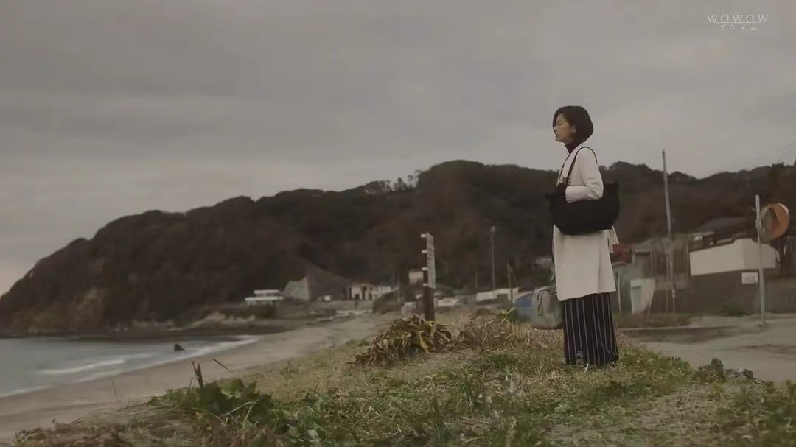
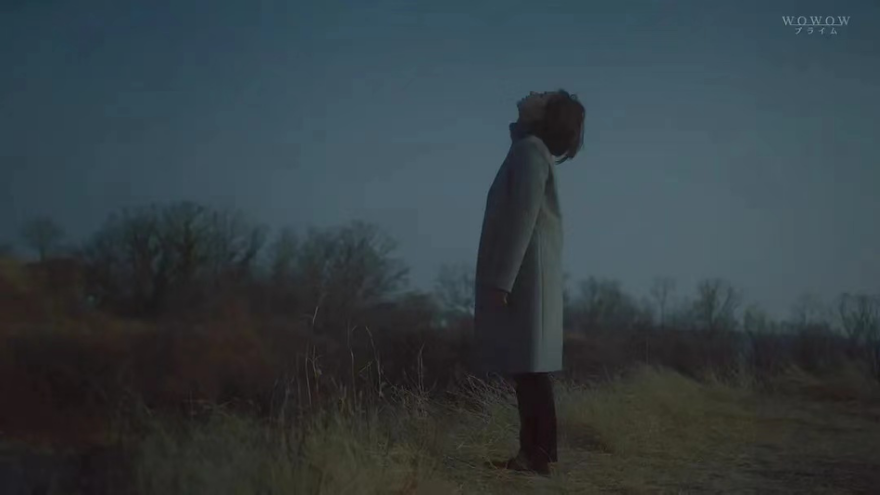
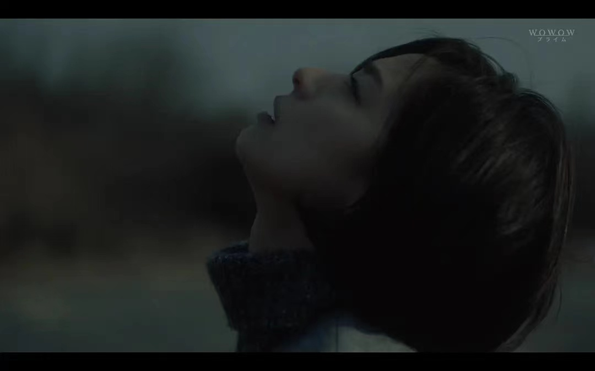
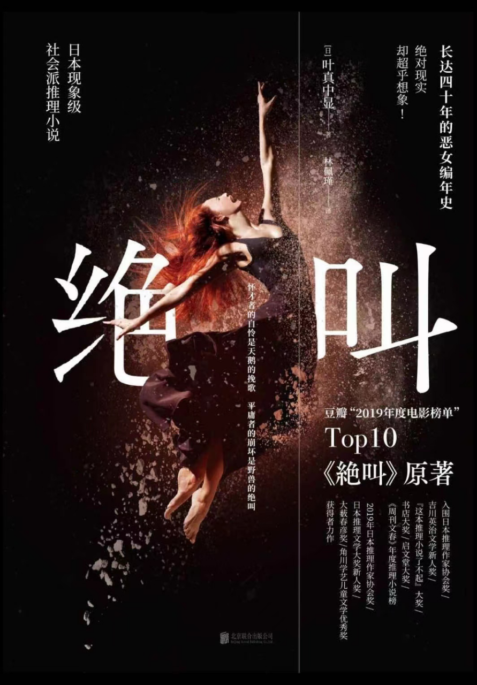

"It was extraordinarily sunny on the day you were born, so your dad decided to name you Yoko!" Yoko Suzuki is the protagonist of the novel Scream, written by Japanese novelist Aki Hamanaka. Born on a brilliantly sunny and cloudless day, she was therefore given the poetic name Yoko. However, her name was actually casually decided by her parents. In the second baby boom, 2.09 million babies were born, and Yoko was one of the most common names given to baby girls. In contrast, Yoko’s younger brother, Jun, was given his name after their mother bought and read quite a few books on name-giving and chose it from over twenty preliminary options. As a girl, Yoko was destined to be the unimportant one in the family and could not receive the care and love she longed for. She was like a goldfish, unable to jump out of the fish tank. Trapped in a suffocating life, no matter which way she turned, there was always an unbreakable glass wall.
Family, masked with fake happiness
"I actually preferred a boy." Their mother once nonchalantly and bluntly told Yoko the truth. After Jun was born, she always said with joy, "I have hoped to have a son for so long and finally." I am really happy about this. "Ah, I even feel that giving birth to this boy is the mission of my life." This is a family where a girl could receive no love. Growing up, Yoko was constantly haunted by questions like "Why am I not as good as my younger brother?"; "Why am I not loved and cared about in this home?"; and "Why does my mother play favorites?" But there were no simple answers. These questions are entangled with issues of gender and patriarchy. As a victim and as an innocent child, Yoko, who grew up in oppression and neglect, could not see the underlying causes of her situation at all. As a young child, she felt broken inside, as if there were a hole in her heart. Filled with emptiness, she blamed herself for being unable to fulfill her mother’s expectations. Gradually, she grew into a self-abasing outcast of society, longing for love, recognition, and escape. Why did Yoko’s mother act in this way? Perhaps it is a result of the patriarchal ideology passed on to her. Even though she was a woman, after unconsciously internalizing misogynist ideas while growing up, she gradually developed a misogynist attitude towards her own daughter. Yoko’s grandfather always said to her mother, who was born in the first baby boom after the Second World War, "There’s no need to go to the university." What is the point of studying for a woman? "A moral woman is talentless!" Back in the day, the workplace was where women prepared themselves for marriage. They looked for their marriage partners there and did office chores, which were commonly seen as a form of bridal training. Many women would leave the workforce and return home after finding someone to marry, and so did Yoko’s mother. After getting married, she quit her job and became a housewife who cooked for the family, cleaned up the house, and looked after the children. That was what she considered her life plan, for she believed that the best family was one where men were breadwinners and women were homemakers. But is that really the best? Yoko disagreed. "Happiness" was constantly on her mother’s lips. She also frequently asked Yoko to compare her life to that of the children living in the slums to teach her that contentment is happiness. Notwithstanding, Yoko still believed that happiness was merely a mask that covered the truth about family. This was not just because she had been treated unfairly by her mother, but because she had witnessed her mother suffer sexual violence from her father when she was just a child. When the fake happiness collapsed, Yoko was not prepared. One night, she accidentally found that her parents were having a fight over her father’s infidelity. The quarrel in which her mother was supposed to have the upper hand ended with her father’s brutal sexual violence against her mother. She witnessed her mother, who always faked her smile and never acknowledged her faults, surrendering under violence, seeking no help, and putting up no resistance. Yoko shivered with fear all of a sudden. The empty shell of family that had confused her fell apart, and all good memories vanished. Everything about this happy family, including the smile on her mother’s face every day, was fake. Later, Yoko’s brother died in an accident. Her father ran away from home due to debts. Their house was mortgaged. Her mother sought refuge with their relatives. After this series of events, Yoko left her family, which had shackled her since she was a child, escaping from the suffocating fish tank. However, what awaited her was not an ocean where she could freely explore and live her life.
Love, as fragile as bubbles
Yoko left her home and started to live alone, like the women of the new generation depicted in magazines. Getting on a new path and starting all over, Yoko felt refreshed and excited. It is at this phase that the most dreamy plot in the whole book took place—Yoko reunited with Yamazaki, for whom she used to hold unrequited love. And more "luckily," she found that he had felt the same way. Yamazaki was Yoko’s first love. They knew each other from their middle school’s art club. They used to draw together, talk together, and enjoy each other’s company on their way home. Later, Yamazaki moved and transferred to another school, and the two lost contact with each other. When they saw each other for the last time, he missed the chance to confess his feelings to her. Ten years passed. Yoko and Yamazaki met each other again in a convenience store. Now, Yamazaki was an unknown yet up-and-coming manga artist, and Yoko was an ordinary girl working part-time. Drawn closer together by memories of the past, the two saw their reunion as destiny. "As long as I am with you, I have the strength to face challenges." I need you. "Please come with me." Yamazaki said to her. Being needed, a feeling that her mother and her family had never offered her, was what Yoko yearned for for years. Soon after their reunion, the two got married. Yamazaki’s job required him to live in Tokyo or its outskirts, which ignited the longing for Tokyo that Yoko once had when she was dreaming to escape her family. The newlywed couple headed towards the city of dreams—Tokyo—the one Yoko had once yearned for and even thought she would never get a seat in. There, Yoko first took the job of telephone answering, which involved tedious trifles and constantly getting scolded. She was striving for her dream future, and her life was mundane but happy. Two years later, Yamazaki’s setbacks at work and his affair strained the relationship between the two. The happy reunion was gone with the wind. Her love life after their marriage was so tragic that police officer Ayano Okunuki could not bring herself to tell him about it. Yoko gets married a couple of times, but none of her husbands survived except for Yamazaki. In her second marriage, Yoko married a man who abused her verbally and physically and depended on her. In her second job, her boss treated her like a money-making tool. Both of them were to blame for Yoko’s further decadence. It can be said that Yoko was tumbling again and again in the emotional world due to a lack of salvation from herself and help and understanding from others. Her ego had been fading away and was eventually lost in her pursuit of recognition and the feeling of being needed.
Money, an endlessly recursive trap
The marriage institution in Japan stipulates that only women need to wait for six months before they can remarry, so Yamazaki seamlessly moved on to his second marriage after divorce. At the same time, Yoko was looking for a more stable and higher-paying job to give herself a better, more secure life. She entered a new company later on and became an insurance saleswoman who had to find her own clients and hit her performance targets. She took it as the beginning of a new life, but it did not lead her to a better future. Instead, she sank into an abyss. At first, Yoko enjoyed what her high salary brought her. She spent the money she earned on her appearance and rent. But as her clients reduced, she was stuck in the setback. Faced with her need for large expenses as well as verbal violence and spiritual temptation from her boss, Yoko blamed herself. She thought that she had setbacks at work because she did not work hard enough and that she had disappointed her boss. She then tried harder by all means to win recognition and compliments from her boss. She sold her body to win her clients and to earn more money, which she then used for shopping. Yoko, eventually, fell into the trap and was stuck in the endless loop of selling her body and earning money, which she was unable to break. The way she earned money gradually crossed the line towards crime and darkness. Unfortunately, Yoko was only a money-making tool for her boss, although she had given all she had. In the end, Yoko was forced to leave the company because she offered sexual services to clients. Yoko, who had been given a name with the denotation of the sun and light, gradually stepped to the bottom of the abyss. Yoko’s stepping into the abyss is the main plot of the mystery novel. The book begins with the discovery of a dead woman who lived alone, which leads to the rest of the story.
Concluding words
Considering that Scream is a mystery novel, the above parts are just brief introductions to the major plots of Yoko’s journey into the abyss. in order to not spoil the fascinating plots. As a whole, the book’s interlocking plots are compelling. Not only does it cleverly incorporate elements of the era in Japan, including people dying alone, earthquakes, and the baby boom, but it also epitomizes the lives of women under patriarchy, presenting a story that is worth reading, savoring, and thinking about.
The female image of Yoko in the book can be taken as a starting point for us to observe and reflect on the survival and existence of women. We can see Yoko was unfairly treated under the patriarchal system since she was born, which turned her into a person desperate for recognition from others, even in her relationships. It was also the reason why she gave away her body for her career, to win recognition from her boss and earn money. It was a pity that Yoko was not understood or helped when she was continuously going through verbal, physical, or psychological violence and oppression. She did not ask for direct support either. Therefore, even though Yoko had been dreaming of escaping the goldfish-bowl-like world where she felt suffocated since she was a little girl, she still ended up losing her direction after setbacks. "Human existence is just a natural phenomenon that is fickle and uncertain." Yoko constantly identified herself with the same saying. She used it to soothe the pain she experienced and to excuse her crimes as well. But in reality, our lives are not "natural phenomena." We cannot experience Yoko’s life personally, so we cannot blame or resent her as if we were moral inquisitors. If similar things happen to us or around us, we can try to discern the forms of bondage in which women are held and avoid or prevent them, even when confronting the ubiquitous oppression from the outside. We can seek assistance from institutions or others or gather the power of women to make change and activate human initiatives so as to save people from becoming another Yoko. Women are often defined and restricted since they are born because of the gender they are assigned at birth. We hope that more women will wake up to the constraints and injustices. And we hope that they will try more, see more, and develop the ability to think independently. We aspire to a world where women are subordinate to no one and can become independent individuals who love themselves before anything else. Wholesome personalities, wisdom, courage, and accountable institutions are the best game changers. We want to popularize women’s protection groups, bring women’s power into play, and encourage women to ask for help when necessary, which is also the prospect Avoice has seen since its foundation. Yoko is a name that denotes a clear sky. All Yokos should be standing in the sun. In this ever-changing era, let’s make it come true with our own efforts.

--- - Authors & Revisors | 秦科、张思雨 - Layout & Cover | Zoey - Translators: Ke Yang, Xiyue Chen - Proofreader: Natasha Gambanjera - Image sources | 网络